1과목: 영상정보 관리일반
1. 다음 중 영상정보 관제센터와 통합영상정보 관제센터에 대한 설명으로 옳지 않은 것은?
2. 영상정보 관제센터의 운영 목적에 따른 세부 설명으로 옳지 않은 것은?
3. 2024년 개정된 「표준 개인정보 보호지침」에서 제시하는 영상정보처리기기운영자가 고정형 영상정보처리기기 설치·운영에 관한 사무를 위탁하는 경우 안내판에 기재해야 하는 항목으로 옳지 않은 것은?
4. 공개장소에서 고정형 영상정보처리기기를 설치·운영하기 위한 목적에 해당하지 않는 것은?
5. 고정형 또는 이동형 영상정보처리기기에 대한 설명으로 옳은 것은?
6. 「개인정보 보호법」에 따른 이동형 영상정보처리기기의 개인영상정보 보호 8대 원칙에 대한 설명으로 옳은 것은?
7. 「개인정보 보호법」 제3조에서 정한 '개인정보 보호 원칙'에 대한 설명으로 옳지 않은 것은?
8. 150세대 이상의 공동주택에서, 공용 엘리베이터 내부에 고정형 영상정보처리기기를 설치·운영하려고 한다. 이 경우 설치에 대한 설명으로 옳은 것은?
9. 다음 「개인정보 보호법」 및 「의료법」에 근거하여 보건복지부에서 발간한 『수술실 설치·운영 폐쇄회로 텔레비전 기준(가이드라인)』에 대한 내용 중 옳은 것은?
10. 「개인정보 보호법」 제25조제2항 개인의 사생활을 현저히 침해할 우려가 있는 장소임에도 예외적 허용이 가능한 시설에 해당하지 않은 것은?
11. 다음 그림은 지하주차장 내 전기차 주변의 화재 예방을 위해 열 감지 여부를 측정하는 실사 열화상 카메라의 화면이다. 이와 관련된 개인정보 보호에 대한 설명으로 옳은 것은?
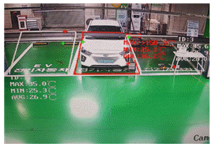
12. 출입통제 시스템 분야에서 사용자 편의성 향상을 위한 생체인증 기술이 활성화 되고 있다. 다음 중 출입통제 시스템에 활용되는 생체인식정보의 특징에 대한 설명으로 옳지 않은 것은?
13. '국가 정보보안 기본지침' 상 '휴대용 저장매체 보안'에 관한 설명으로 옳지 않은 것은?
2과목: 영상정보 관제시스템
14. 영상정보관리사 LEE 씨는 다수의 감시카메라로부터 수집되는 대용량 영상 데이터를 안정적으로 저장하고자 한다. 그는 하드디스크 1개가 고장나더라도 데이터 손실 없이 운영 가능해야 하며, 저장 공간 효율을 고려하면서도 복구를 위한 패리티 정보를 단일 디스크가 아닌 분산 방식으로 저장하는 구성을 원한다. LEE 씨가 선택할 수 있는 최적의 저장장치 구성 방식은?
15. 영상정보처리기기에서 녹화 데이터를 효율적으로 압축하여 저장 공간을 절약하고 전송 속도를 향상시키기 위해 사용되는 영상 압축 기술에 해당하는 것은?
16. 영상정보관리사 HAN 씨가 통합운영센터 서버실에서 정전이 발생하더라도 영상 녹화 및 모니터링 시스템이 중단되지 않도록 하기 위해 고려해야 할 대응 방안은?
17. 다음은 영상정보처리기기의 영상 저장 방식에 대한 설명이다. 아래에서 정의하는 조건에 적합하지 않은 서버 종류는?
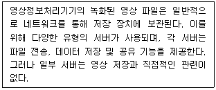
18. 돔 카메라(Dome Camera)에 대한 설명으로 옳은 것은?
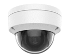
19. IP 카메라와 아날로그 카메라에 대한 설명으로 옳지 않은 것은?
20. 드론에 영상정보처리기기를 탑재하여 활용하는 방식에 대한 설명으로 옳지 않은 것은?
21. 영상정보처리기기의 촬상소자에 대한 설명으로 옳지 않은 것은?
22. 고정형 영상정보처리기기(CCTV 카메라)에 사용되는 렌즈의 특성과 구성에 대한 설명으로 옳지 않은 것은?
23. 영상정보관제시스템(VMS)의 이벤트 검출 관련 설정 화면에 대한 설명으로 옳은 것은?
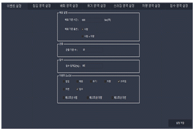
24. 영상정보관리 서버 설정 화면 중 일부의 예이다. 설정에 대한 설명으로 옳지 않은 것은?
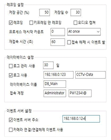
25. 관제 모니터링 화면의 구성 및 설정에 대한 설명으로 옳지 않은 것은?
26. 영상정보관제시스템(VMS)의 영상화면 구성 예시이다. 화면의 설정에 대한 설명으로 옳지 않은 것은?
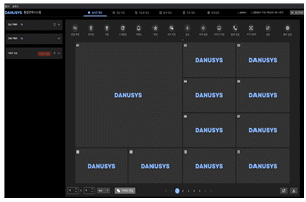
27. 영상 분석 기능이 포함되지 않은, 영상 분배 서버의 일반적인 기능에 대한 설명으로 옳은 것은?
28. 다음은 관제시스템 DB 백업 및 복구 화면 중 일부의 예이다. 관제시스템에 필요한 백업 필수 사항에 해당하지 않은 것은?
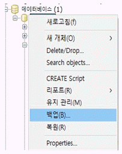
29. 영상정보관리사 A 씨는 관제 중 아래와 같은 모니터 화면 장애를 확인하였다. 각 화면 현상의 원인에 대한 설명으로 옳지 않은 것은?
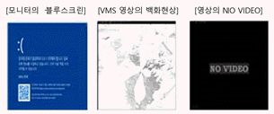
30. 영상정보관제시스템(VMS)의 운용 서버에서 장애를 진단하는 방법에 대한 설명으로 옳지 않은 것은?
3과목: 영상정보 관리실무
31. 과학기술정보통신부의 「지능형 CCTV 성능 시험·인증 운영지침」에 따른 지능형 CCTV 솔루션 성능시험 분야 및 항목 중, 일반 분야의 인증에 해당하는 것은?
32. '서울시 안심이' 앱을 이용하여 영상정보 관제센터에 안심경로 서비스를 요청한 화면의 예이다. 관제와 관련된 다수의 모니터링 화면을 일정 시간 간격으로 순차적으로 전환하는 관제 기법은?
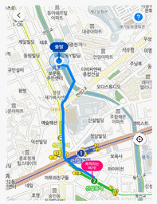
33. 다음 제시된 상황에 적합한 관제 기법은?
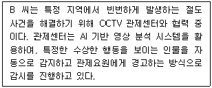
34. 다음은 영상정보관제시스템(VMS)에서 상황별 이벤트 화면의 한 예이다. 설정된 이벤트 화면에 대한 설명으로 옳지 않은 것은?
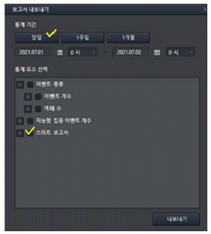
35. 설정된 트릭 모드에 부합하지 않는 객체의 움직임에 동작하여 녹화되는 경우 또는 객체의 움직임이 없으나 로그 생성과 영상 녹화되는 상황에 해당하는 이벤트 정상 검출 여부 판단 기준은?
36. 영상정보관제시스템(VMS)에서 제공하는 검색 기능 화면의 한 예이다. 화면에 대한 설명으로 옳은 것은?
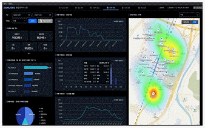
37. 다음 그림은 문제차량이 검출되어 이동 경로가 파악되고 있는 과정이다. CCTV 촬영 방향을 표출하며 차량 이동 경로를 예측할 수 있는 CCTV 제어기능으로 거리가 먼 것은?
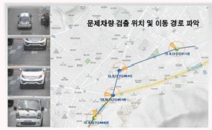
38. 영상정보관리사(관제요원) O씨가 영상정보처리기기로 화상순찰 중 긴급(SOS) 비상벨 이벤트를 발생했을 때, 그에 대한 대응 사항으로 옳지 않은 것은?
39. 영상정보 관제센터의 기록물 및 문서보안에 관한 설명으로 옳지 않은 것은?
40. '개인영상정보 반출 관리대장'에 기재되어야 할 항목이 아닌 것은?